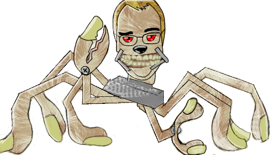
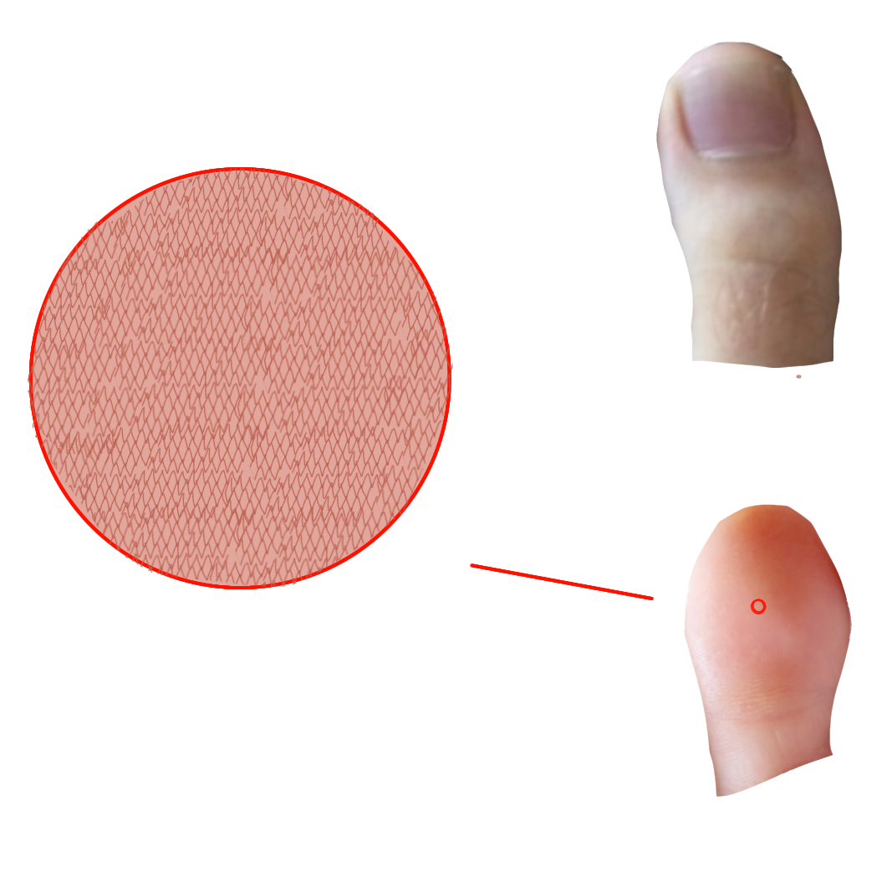
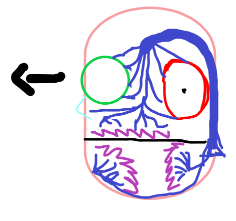

What Are they?
Posty Bears are a fictional series of mythical creatures and events based on multiple encounters with our principal here at Davinci Academy of the Science and Arts. These events will be linked to the prequel that a very good friend of mine is making. (Link to Abby’s Site)
Imagery
Posty Bears are a breed mixed with the robotic spider body from Toy Story with the head of our principle, bear ears for good hearing and a bear nose for the enhanced smell.
A diagram shadow of the build of the posty bears
This is an in depth picture of what the PostyBears look like and how they're built.

This diagram shows The toes and how they use them to grip the walls while climbing.

This is a diagram of the circuits and teeth inside the head of the PostyBears.
